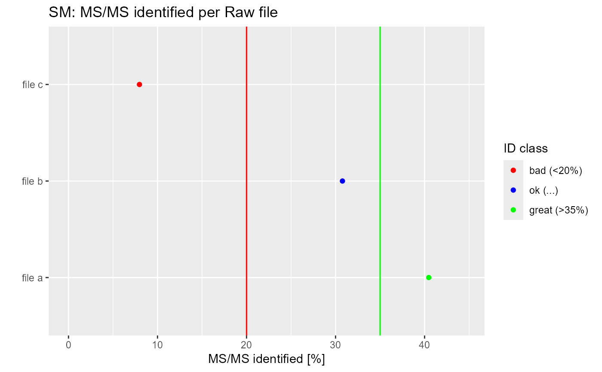

Useful for a first overall impression of the data.
plot_IDRate(data, id_rate_bad, id_rate_great, label_ID)A data.frame with columns as described above
Number below which the ID rate is considered bad
Number above which the ID rate is considered great
Named vector with colors for the categories given in data$cat
GGplot object
The input is a data.frame with columns 'fc.raw.file' - name of the Raw file 'ms.ms.identified....' - fraction of identified MS/MS spectra in percent 'cat' - identification category as arbitrary string where each row represents one Raw file.
id_rate_bad = 20; id_rate_great = 35;
label_ID = c("bad (<20%)" = "red", "ok (...)" = "blue", "great (>35%)" = "green")
data = data.frame(fc.raw.file = paste('file', letters[1:3]),
ms.ms.identified.... = rnorm(3, 25, 15))
data$cat = factor(cut(data$ms.ms.identified....,
breaks=c(-1, id_rate_bad, id_rate_great, 100),
labels=names(label_ID)))
plot_IDRate(data, id_rate_bad, id_rate_great, label_ID)
#> Warning: Removed 1 rows containing missing values (`geom_point()`).
